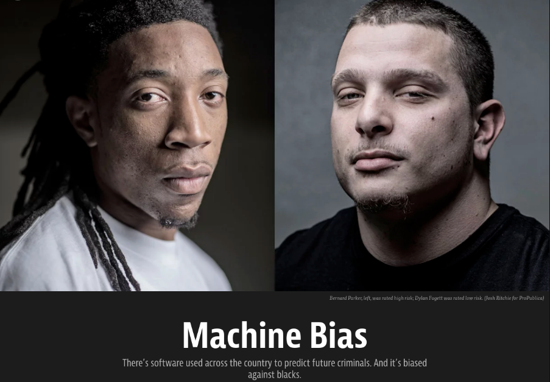
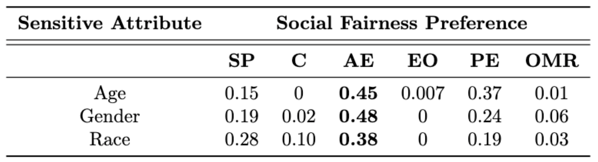

Fair Kidney Placement
Background and Objectives
Transplantation provides patients suffering from end-stage kidney disease a better quality of life and long-term survival. However, approximately 20% of deceased donor kidneys are discarded and never transplanted. While some discards may be medically appropriate, others reflect missed opportunities. Even kidneys deemed less desirable may provide survival benefits to some recipients. Organ Procurement Organizations (OPOs) have great difficulty finding transplant centers to accept less medically desirable (or higher risk) kidneys. At their discretion, OPOs can use accelerated placement to bypass the priority list for “hard-to-place” kidneys. However, due to a lack of data-driven guidance, this mechanism is not systematically applied, likely underutilized and could lead to biased outcomes across protected groups in the society. To enable transformative change, this project investigates biases in Artificial Intelligence (AI) decision support and develops fair systems into the kidney offer process to support both demand at the transplant center and supply at the OPO. Key workers include OPO staff (organ procurement coordinators, operations directors, medical directors), transplant center staff (coordinators, physicians, surgeons), and transplant patients. The main objectives of this project are
- measure diverse stakeholder preferences to analyze biases within the AI support system’s operation and interface, and
- aggregate fairness preferences across diverse stakeholders,
- improve fairness in the model output, based on the prescribed aggregated fairness notion.
Supporting Agencies
Contributors

Thrust 1: Learning and Aggregating Fairness Preferences of Diverse Stakeholders
Modern kidney placement incorporates several intelligent recommendation systems which exhibit social discrimination due to biases inherited from training data. Although initial attempts were made in the literature to study algorithmic fairness in kidney placement, these methods replace true outcomes with surgeons' decisions due to the long delays involved in recording such outcomes reliably. However, the replacement of true outcomes with surgeons' decisions disregards expert stakeholders' biases as well as social opinions of other stakeholders who do not possess medical expertise. This paper alleviates the latter concern and designs a novel fairness feedback survey to evaluate an acceptance rate predictor (ARP) that predicts a kidney's acceptance rate in a given kidney-match pair. The survey is launched on Prolific, a crowdsourcing platform, and public opinions are collected from 85 anonymous crowd participants. A novel social fairness preference learning algorithm is proposed based on minimizing social feedback regret computed using a novel logit-based fairness feedback model. The proposed model and learning algorithm are both validated using simulation experiments as well as Prolific data. Public preferences towards group fairness notions in the context of kidney placement have been estimated and discussed in detail. The specific ARP tested in the Prolific survey has been deemed fair by the participants.
References
- M. Telukunta, S. Rao, G. Stickney, V. S. S. Nadendla, and C. Canfield, “Learning Social Fairness Preferences from Non-Expert Stakeholder Opinions in Kidney Placement,” Submitted to Conference on Health, Inference and Learning (CHIL’24), 2024.
Thrust 2: Fairness Through Disagreements
References
- M. Telukunta⋆ and V. S. S. Nadendla, “Towards Inclusive Fairness Evaluation via Eliciting Disagreement Feedback from Non-Expert Stakeholders,” in 3rd Workshop on Bias and Fairness in AI (BIAS’23) at ECML-PKDD Conference, Turin, Italy, 2023.
Thrust 3: Non-Comparative Fairness for Human-Auditing
Bias evaluation in machine-learning based services (MLS) based on traditional algorithmic fairness notions that rely on comparative principles is practically difficult, making it necessary to rely on human auditor feedback. However, in spite of taking rigorous training on various comparative fairness notions, human auditors are known to disagree on various aspects of fairness notions in practice, making it difficult to collect reliable feedback.With the advancements of algorithmic decision making, biases and unfair treatment have also increased which affects human lives significantly. Many fair notions have been introduced in the past few years in order to eliminate the biases. But, these notions of fairness do not satisfy individual preferences and does not meet the expectations of society. We introduce a new notion of fairness called subjective fairness where a trusted auditor evaluates the efficiency of a classifier by employing an arbitrary fairness rule. We also design a post-processing approach to improve subjective fairness using a randomization scheme over the outputs and prove that, the probability of improving fairness is independent of the randomization scheme. Our work offers a paradigm shift to the domain of algorithmic fairness via proposing a new fairness notion based on the principle of non-comparative justice. In contrary to traditional fairness notions where the outcomes of two individuals/groups are compared, our proposed notion compares the MLS' outcome with a desired outcome for each input. This desired outcome naturally describes a human auditor's expectation, and can be easily used to evaluate MLS on crowd-auditing platforms.
References
- M. Telukunta and V. S. S. Nadendla, “On the Identification of Fair Auditors to Evaluate Recommender Systems based on a Novel Non-Comparative Fairness Notion,” in Third FAccTRec Workshop on Responsible Recommendation (FAccTRec’20), September 2020. Available: https://arxiv.org/pdf/2009.04383.pdf